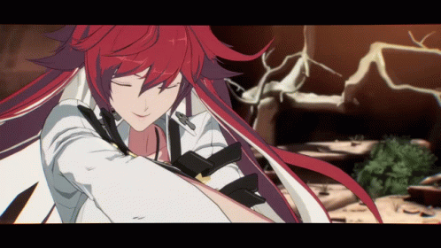

In 2073, Aria Hale was converted into the gear overlord "Justice", and was able to control other gears to stop their great power from causing danger to others. That Man took control of her instead and made her annihilate Japan to end the chaos. Following the event, she went mad and lost her memories, resulting in her declaring war on humanity and starting the Gear War until eventually being sealed and defeated. That Man would later create a physical double he named "Jack-O' Valentine" to act as the remaining half of her soul intact before her corruption.
cIn 2187, jack-O' would be awakened by I-No and walk out on her own to get some fresh air. She would encounter Sol, who questions her on the resemblance to his late lover. She would be located by Raven and teleported away to safety to wait for That Man to return. Soon, a plan to revive Justice is ended when Jack-O' takes over the remains and can once again become Aria.
Following this, Sol takes her by his side once again to aid him in his bounty hunting, while her consciousness comes back to her over time. When happy Chaos and I-No combine and become a worldwide threat, she attempts to sacrifice herself to save everyone, but sol refuses to lose her again and convinces her to join them to all stop them together. Following their defeat, she is living peacefully with the now humanized Sol.
